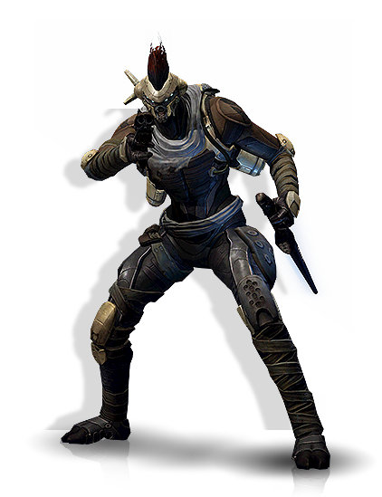
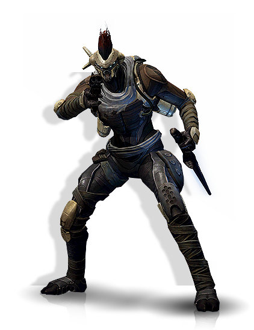

Not being entirely sure why your brain seems to trust this little … ghost … off what little interaction you’ve had with it, you decide to listen to its recommendation and head off into the darker path.
A beam of light starts to illuminate the way forward as your ghost’s eye projects light akin to a flashlight. You quickly make your way across the width of the inner wall, as you come to a room. Your ghost flies ahead of you, its beam of light shifting to what seems to be a scanner, before coming to a stop at a table. Making your way over, your ghost speaks up, “Over here, weapons. It’s not pretty or powerful but it will help you defend yourself.”
Upon the table lies a rifle, slightly rusted and beat up, but beggars can’t be choosers. You also notice a knife on the table as well, and you pick it up stuff it in a belt loop. A good enough holster for now.
Just as you holster your knife, a crash rings out through the room as a celing panel gives way, followed by a multi-eyed creature. It lands right in front you, unlike anything you have seen before.
“A dreg!” your ghost exclaims, “Guardian!”
The dreg lets out a snarl as it starts to lunge for you with a knife coated in electricity.
What do you do?